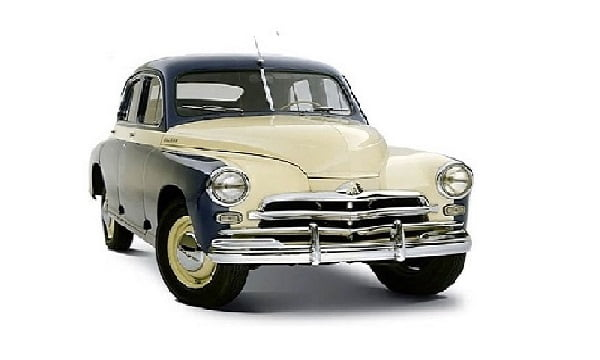

ГАЗ-М20

ГАЗ М-20 «Побе́да» — советский легковой автомобиль среднего класса, серийно производившийся на Горьковском автомобильном заводе (ГАЗ) в 1946—1958 годах, в Польше в 1951—1973 годах и в Камбодже или Китае (предположительно) в 1957—2002 годах.Заводской индекс модели — М-20. Легковой автомобиль представляет собой третье поколение легковых машин ГАЗ и является преемником модели М-1. 28 июня 1946 года начался серийный выпуск автомобилей «Победа». Всего до 31 мая 1958 года было выпущено 241 497 машин, включая 14 222 кабриолетов и 37 492 такси.